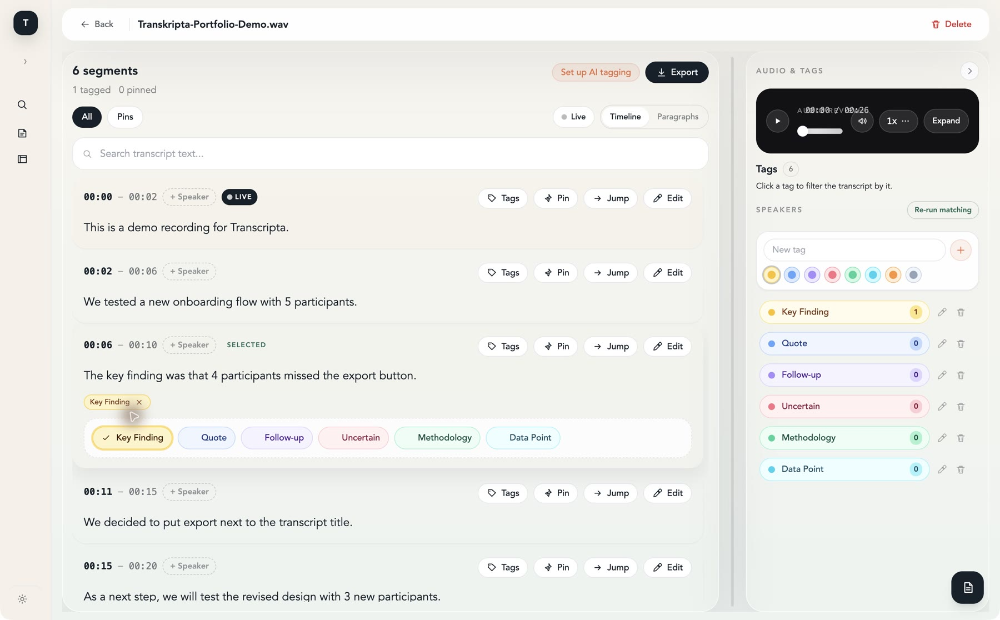
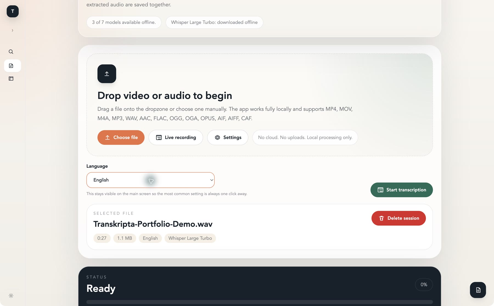

BUILDING IN PUBLIC · NOTES
Transkripta turns recordings into research material
I built a Mac app for fast offline transcription, with searchable passages, audio playback and optional AI tagging.
After an interview, the work I want to do is find the moment someone noticed a problem, pull out a quote, and listen again before I use it. I built Transkripta to keep that work in the same place as the recording. I can drop in an audio or video file, pick a language and get a transcript on my Mac. There’s also a live recording mode.

Keeping the transcript close to the audio
The review view breaks the transcript into timed passages. I can search the text, jump from a passage to its audio, correct wording, assign a speaker or pin a passage for later. The same session keeps the transcript, review edits, tags and extracted audio together. The screenshot uses a short synthetic interview about an onboarding test. The line about four participants missing the export button is easy to find again because it carries the Key Finding tag.
Giving passages useful labels
Key Finding, Quote, Follow-up and Data Point are among the built-in tags. I can apply them myself, create my own and click a tag to filter the transcript. Transkripta can also tag passages automatically through an optional OpenAI-compatible model connection. It sends nearby passages as context, asks the model to label the target passage, and lets the model leave it untagged. Pointing that connection at a local server such as Ollama or llama.cpp keeps the tagging on the Mac too.
Running the transcription offline
Once the speech model is downloaded, transcription runs on the Mac without uploading the recording. For the demo I used Whisper Large Turbo. The 27-second sample came back as six passages, which was enough to try searching, tagging and jumping through the audio in one sitting.
